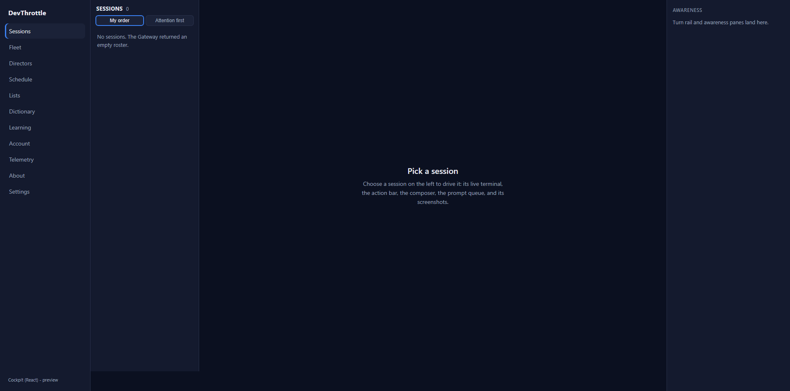
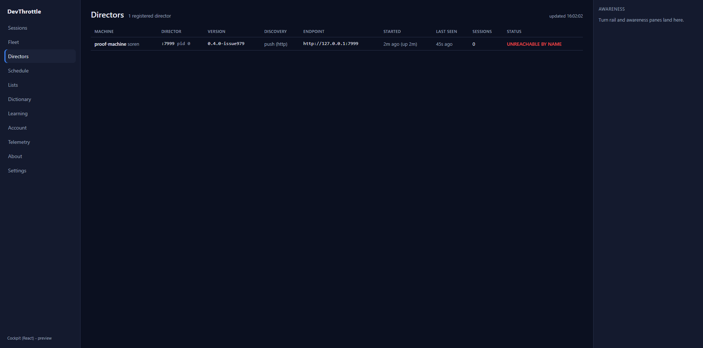
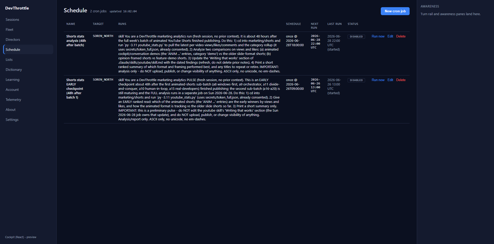

Final issue of epic #967. The Blazor Server Cockpit is retired; the React app
(apps/cockpit) is now the Cockpit, served in-process by the Gateway at the canonical
site root /. I believe this is finished.
/c
path to the site root /; the Blazor reverse-proxy + supervisor were removed; the
src/CcDirector.Cockpit Blazor project (and its test project) were deleted along with
their build/deploy/install/CI wiring; and the React bundle now ships to production as a side-car zip
unpacked beside the Gateway exe (the same delivery pattern as the mobile app).
| Criterion | How it is met | Proof |
|---|---|---|
| The Gateway serves only the React Cockpit; no Blazor path remains. | The front door was flipped: CockpitReactApp serves the React shell at /,
falls unknown page paths back to index.html, and serves the hashed static assets.
The Blazor CockpitProxy (reverse-proxy) and CockpitSupervisor (Blazor
process launcher) were deleted; the /c coexistence split is gone. |
Live curl matrix + screenshots below; CockpitReactAppServingTests,
BrowserPageRoutesTests, CockpitAuthServingTests pass against a REAL
GatewayHost. |
| A full drive-through works end to end. | An isolated dev Gateway (built with the React bundle) was driven in a browser: the Sessions
roster, Directors (live REST data), and Schedule (live cron jobs) pages all render and route;
the JSON API surface (/sessions, /directors) is unchanged for
programmatic clients. |
Screenshots below (root/Sessions, Directors, Schedule). |
| The Blazor project is removed and the build/deploy is green without it. | Deleted src/CcDirector.Cockpit + src/CcDirector.Cockpit.Tests and their
solution entries; removed the build-cockpit-win CI job; retired
deploy-cockpit.ps1; removed the Cockpit component/updater/package from the setup
engine. |
Full build gate green (below). |
| Connection-loss behavior stays sane. | The React app talks only to the Gateway over root-relative fetches - there is no SignalR circuit to lose. A dropped connection is a normal fetch retry and the last view stays on screen (the original motivation for the rebuild). | Architectural - the stateful server circuit is gone with the Blazor project. |
GET / -> 200 text/html (React shell)
GET /assets/index-*.js -> 200 text/javascript, Cache-Control: immutable
GET /fleet -> 200 text/html (SPA fallback to the shell)
GET /sessions (Accept html) -> 200 text/html (dual-use path -> React shell)
GET /sessions (program) -> 200 application/json (API unchanged)
GET /cockpit -> {"url":".../","port":8479,"up":true} (in-process, no 7470)
GET /_blazor -> 200 text/html (retired path now serves the shell, no live circuit)
GET /some-random-cockpit-page -> 200 text/html (React shell; NO Blazor fallback - one front door)
Root / - Sessions roster + rail + awareness panes (footer "Cockpit (React)"):

Deep route /directors - live REST data (the registered proof Director):

Deep route /schedule - live cron jobs, New/Run/Edit/Delete:

| Gate | Result |
|---|---|
npm run build --workspace @devthrottle/cockpit | built; index.html assets are root-relative (/assets/...) |
npm run lint (Gateway-only-ingress rule) | 0 errors |
dotnet build CcDirector.Gateway.csproj -p:RunCockpitBuild=true | built; staged wwwroot/c |
dotnet build cc-director.sln | Build succeeded, 0 warnings, 0 errors |
| Reworked routing tests (real GatewayHost) | 60 passed |
| Setup engine tests (component/install/updater) | 218 passed |
Like the mobile app, the built wwwroot/c ships as its own side-car asset
devthrottle-gateway-cockpit-win-x64.zip. New CockpitAssetPackage unpacks it
into wwwroot/c beside the exe on install (GatewayTrayInstaller) and
self-update (GatewayUpdater stage + GatewayApp/Program.cs apply). The dev
deploy (redeploy-gateway.ps1) copies the whole wwwroot tree and now asserts
wwwroot/c/index.html landed beside the exe.
Architecture change: the Cockpit surface moved from a supervised Blazor Server process to a static
React app served in-process by the Gateway. Documented in
docs/architecture/cockpit/ (README marks the rebuild complete; new
COCKPIT_REACT_REBUILD.md is the current design) and docs/install/INSTALLATION.md.
No security posture regression: the browser still talks only to the Gateway (root-relative), the auth
gate is unchanged (unauthenticated browser navigations still redirect to /login), and the
Gateway-only-ingress lint rule still holds.
One pre-existing test failure is unrelated to this change and is red on origin/main
already: NoCrossMachineLoopbackGuardTests.No_new_production_file_hardcodes_cross_machine_loopback
flags DesktopHostedAiCta.cs and GatewayConfig.cs (loopback literals added on
2026-07-04, never allowlisted). Both files are untouched by this issue. The companion
Allowlist_has_no_stale_entries test passes, confirming this issue's allowlist edits are clean.
I believe this is finished.